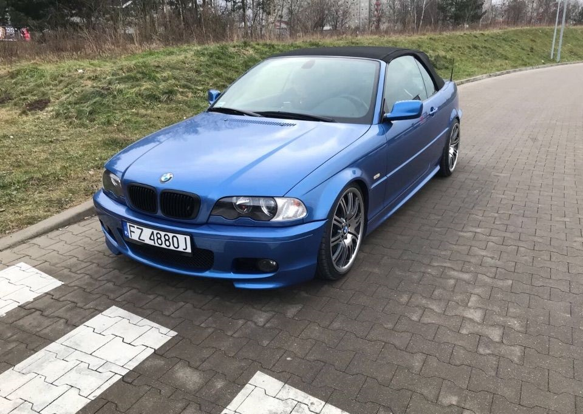

BMW E36 PINKNE AUTO NA POLSKIE DROGI
BMW serii 3 III zadebiutowało na rynku w 1990 roku.Samochód zastąpił drugą generację po 8 latach produkcji, otrzymując kod fabryczny E36. Gama prędko została rozbudowana do wielu odmian: limuzyna (sedan) i kombi, a także coupé, kabriolet i plasowany jako oddzielny model hatchback
